k-Day 063｜扎門烏德
本來打算六點起床第一個過境，結果九點才睡醒。
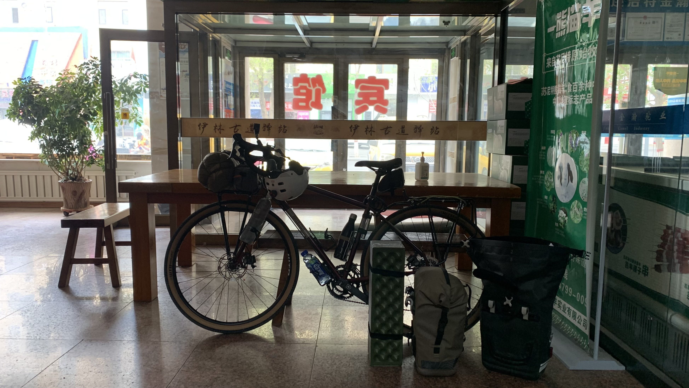
這些是接下來要一起前進的夥伴。距離國門只有4公里，出了旅店大門直直走就到了。
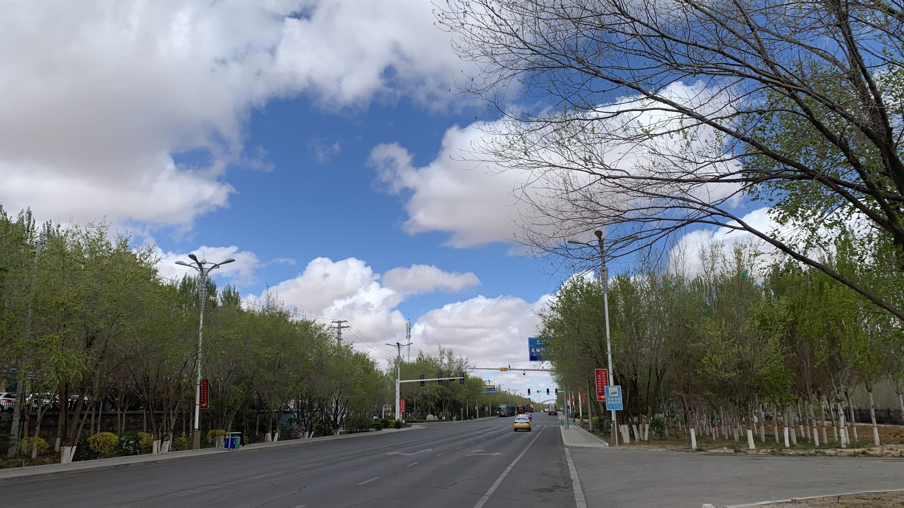
聽說自行車不能自己過境，一定要讓路邊的轎車帶著走才行。不太懂這樣的邏輯，但是到了門口確實被攔下來。
警衛友善地問我是哪裡人，熟門熟路的我決定不接這個碴，主動拿出臺胞証交上去。
另一邊的警衛見狀走來，也問：「是哪裡人？」
手拿台胞証的警衛也很聰明，話到嘴邊先吞了回去，直接把台胞證移到另一位警衛的眼下。
「台灣人。」另一位警衛反射性地說。「中國人，台灣也是中國人。」說完立刻又補上這句話。
所以你們自己也覺得麻煩吧，
兩位警衛跟我說回頭去路邊找一輛車，就可以過境了。
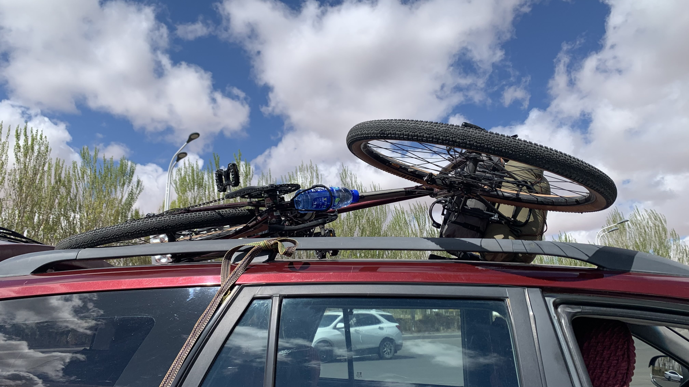
連續幾個司機都報價100元，但我的錢包裡只剩53元。我拿出所有的紙鈔，看誰要載我。最初攔住我的紅色休旅車夫妻開到我旁邊，直接幫我把車包水壺卸下，將二十三號綁在車上，變速導輪把手什麼的就不用珍惜了。他們拆馬鞍包的動作之快，比自行車行的老闆還專業。想起赤峰那個裝逼老闆想拆我車包時還摸了很久，最後問我這種包怎麼拆。這對夫妻三秒卸下，5秒把二十三號扛上車頂，綁好帶子固定不超過10秒，我人都還沒反應過來就被推上車。
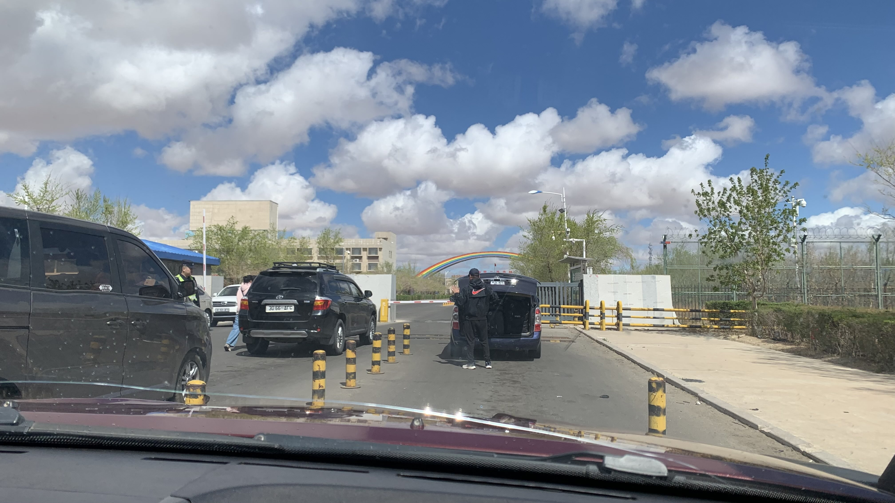
這些休旅車全都是拉貨的，沒有所謂觀光旅人這樣的存在。
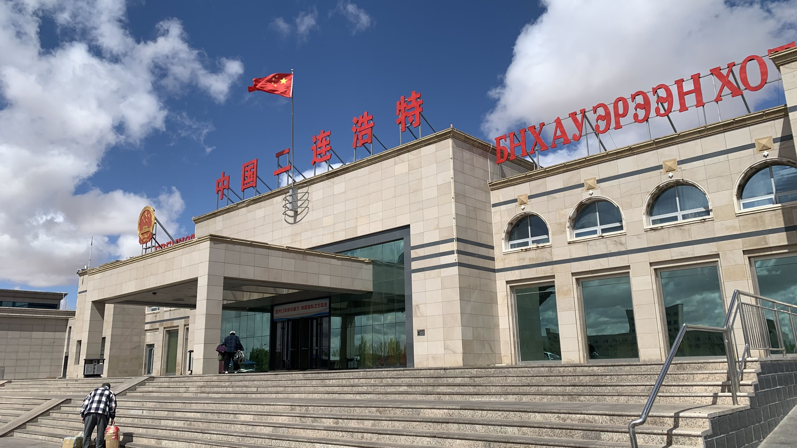
司機開進門後把車包又裝回去，要我跟他太太一起進去過安檢。他裝馬鞍包的速度比我還快，連快扣怎麼拉、下方的固定鎖如何嵌進貨架都知道，究竟載過多少自行車旅人呢？
過安檢時主動將護照收好，把台胞證交上去。沒想到海關人員竟然說要看蒙古的簽證，又問我入境中國時沒有蓋章嗎？跟他解釋入境時用的是台胞證，他說必須詢問其他人員。
載貨的夫妻可能等太久，回到大廳看我怎麼還沒出來。對著他們尷尬地笑了笑，希望不會丟下我自己離開，幸好兩人只是在外面等著。
有個像主管的人走來，低聲訓斥幫我辦理入境的人：「誰讓你看這個？你就讓他過去。」他的眼神落在那本綠皮護照上。被訓斥後的海關人員看來心情不太愉悅，沒有直接讓我走，而是對著電腦又處理了一些什麼。問了去蒙古後直接回台灣嗎？我說可能會從新疆再入境。
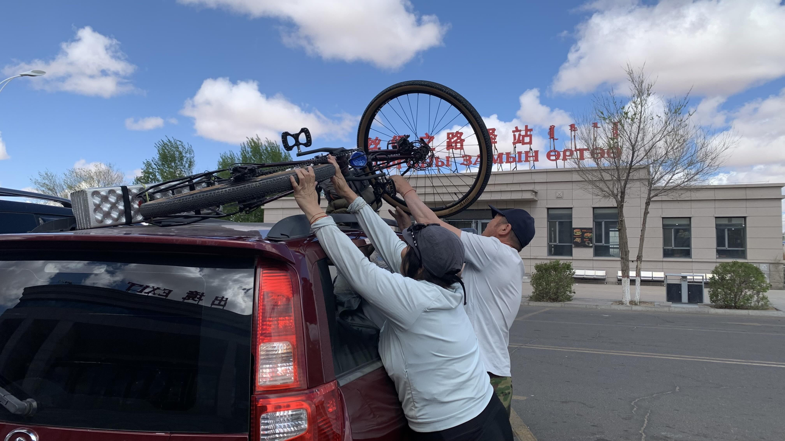
問完終於放行，載貨的夫妻趕緊上前把我的行李全都拿過去，迅速綁上二十三號，看來這是份爭分奪秒的生意。
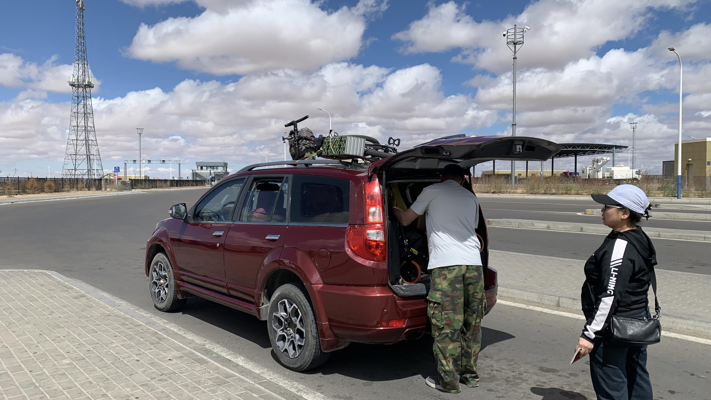
過蒙古邊境時二十三號不用下車，直接跟著司機走。我則和他太太一起提著包過安檢。
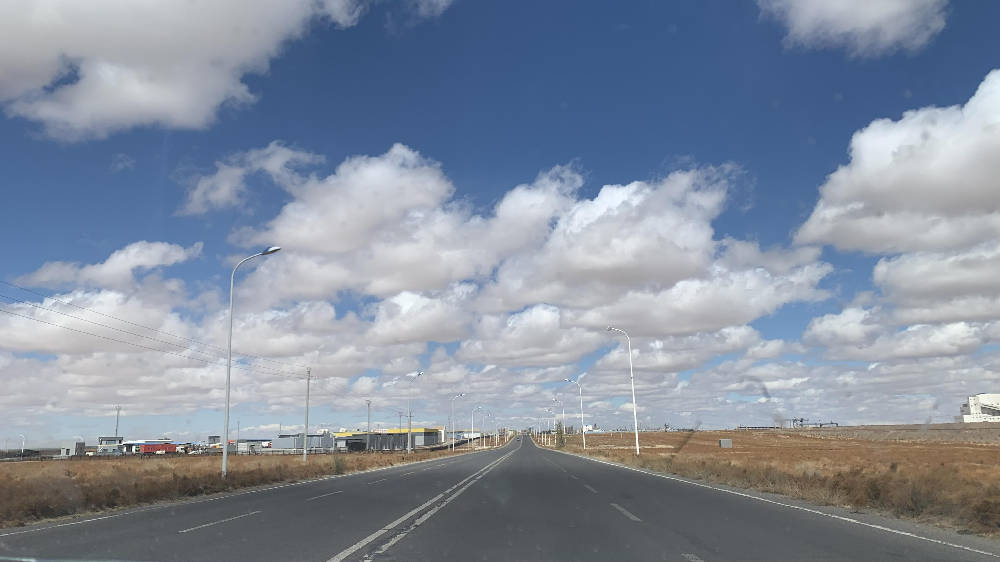
入了國門，這裡就是蒙古了。
他們問我待會要去哪裡？當然我聽不懂這句蒙文。
整個車上四個人各種換句話說問了我好幾次，最後沒辦法，打電話給一位會說中文的人轉譯的。
聽懂了以後我說我不知道要去哪兒呢，司機太太就說：「你要到烏蘭巴托吧？」我說：「對的。」說出這句話，我看到大家的肩膀瞬間鬆了下來。
太太說：「那就是到車站。」
後座的一位也是搭車運貨的女性說：「就是去車站」
我重複：「車站。」
大家笑著一起重複：「車站。」
司機笑著用中文說：「蒙語，聽不懂～」
我回：「森弄～」
司機笑著回：「膩浩～」
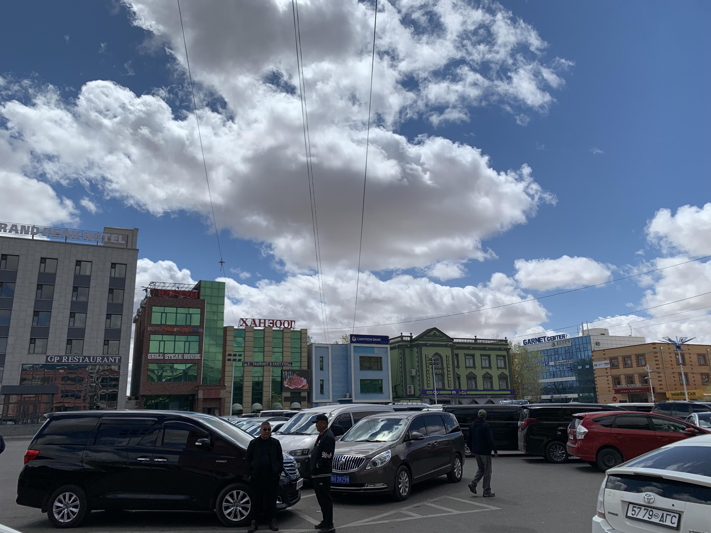
如果把口岸用機場的概念想，專屬計程車司機還幫你扛貨帶你過境，100元的價格並不過分。他們願意讓我用53元上車，期間沒有嫌棄拿了低價，幫我搬貨卸貨時也很友善，還把我和其他人一起送到到車站，算是相當有職業操守的人。
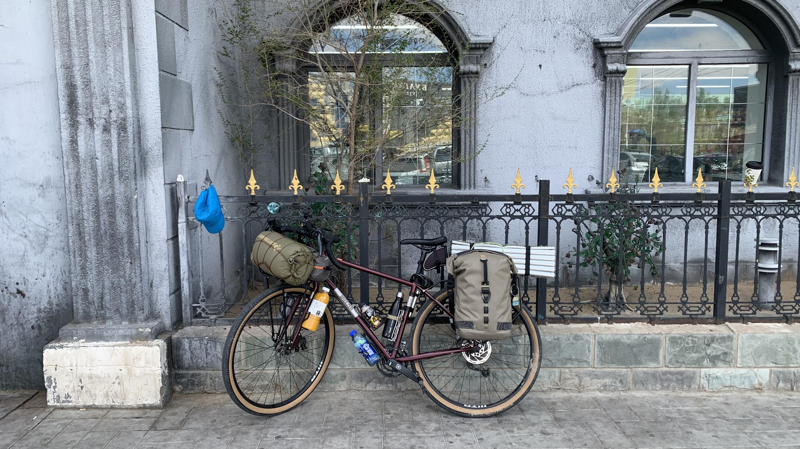
先幫安全落地的二十三號拍張照。後面的蛋殼睡墊是新夥伴，體積很大，完全可以想像有多招風。前叉的芒果汁是到了烏蘭巴托後準備開來慶祝的產品，希望這幾天能忍住不喝它。
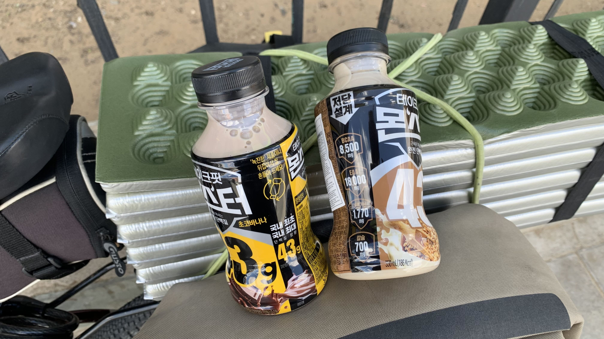
環顧四周，廣場上有CU，還有真正的咖啡店，立馬進去買了兩瓶久違的蛋白好朋友，明早出發往戈壁前可以再來這裡喝一杯早安咖啡。
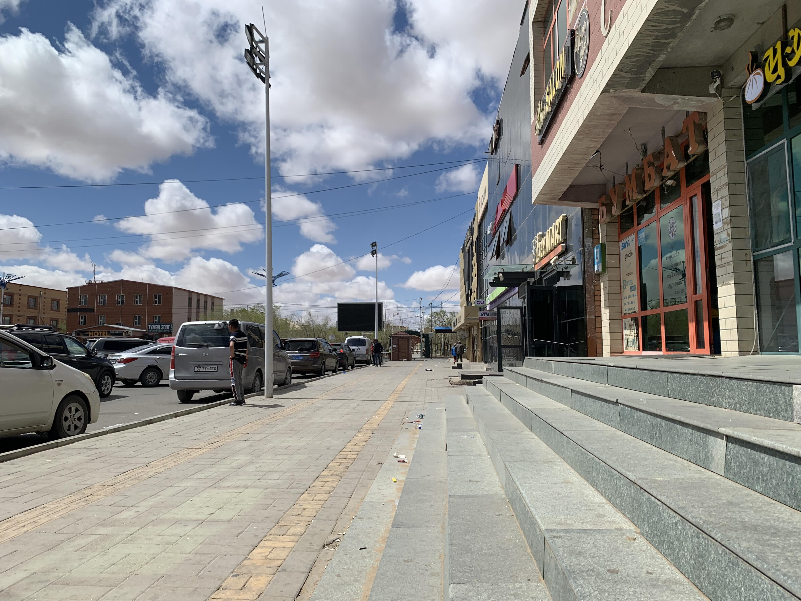
街景很歐，不知道這樣說是否恰當，但是很有熟悉感，連街上飛的紙屑菸頭都很歐。
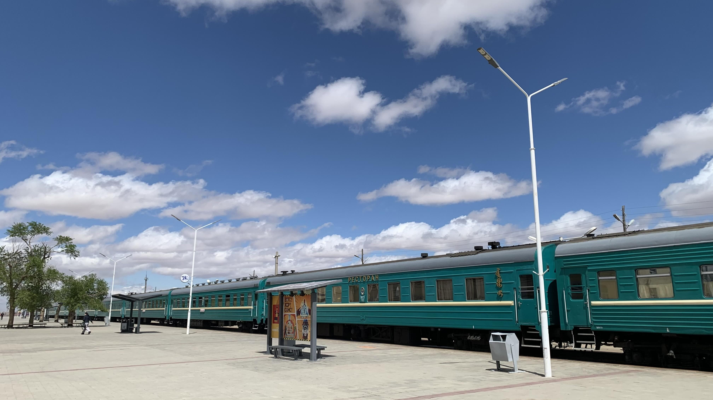
火車站月台倒是相當乾淨，綠皮火車和藍天白雲十分搭配。
繞著廣場參觀了一下，風實在太大，吹得身體有點失溫。眼光瞄到火車站正對面的旅館有兩個抽煙的員工樣子的女子。走過去試著詢問房價。其中一人開價80000，有點貴，但跟查到的口岸住宿價格差不多。接著問單車能進去嗎？對方說進去加50000。馬上搖搖手，嘴上說了謝謝，心裡想的是：「我的車你給他加床嗎？給他洗漱用品嗎？真幽默啊小姑娘。」當然這些話沒說出口，畢竟不會蒙語。
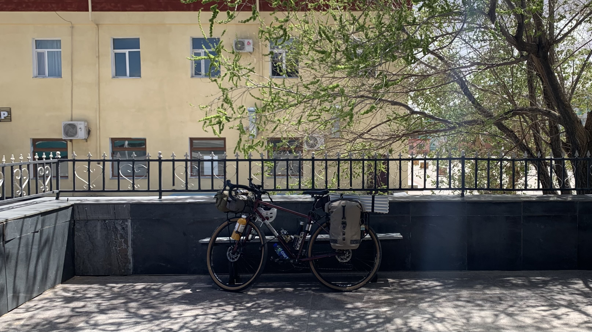
在火車站廣場周遭繞了兩小時。其它掛著Hôtel標誌的建築走進去不是直接無視我，就是搖搖手說不能住，還有的根本找不到任何人。難道全都是佛系經營的嗎？
被風吹到頭痛，坐在角落避風思考如何解決這困境。走來一位大叔，欣賞地拍了拍二十三號貨架上的睡墊，問我：「Japan?」不確定問的是我還是二十三號，先點頭再說。大叔露出果然如此的表情又多看了二十三號幾眼，看來大叔眼中只有二十三號。
決定離開火車站往住宅區走，看到一間比較新的建築，目測也許會貴一些。前台指著牆上的標價連說帶比劃：「一個人，98000」單車可以進來嗎？他點點頭，指了樓梯下方，看來是可以放在樓梯間。
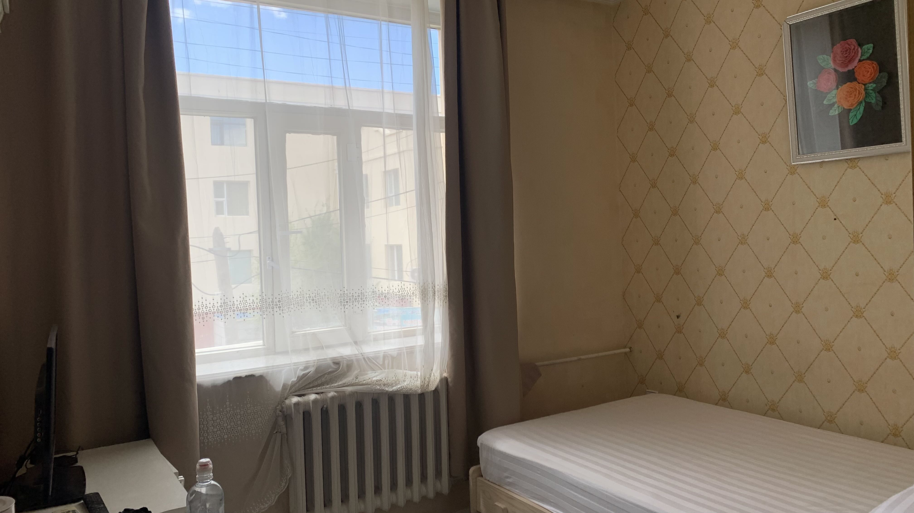
房間和房價也頗歐，如果再騎遠一點也許可以找到更便宜的住宿，然而待會還得回車站附近的銀行換匯，也想再到CU買些蛋白棒帶著吃。既然是明碼標價也讓車進來，就爽快付錢結束這回合。停好車放了行李，躺在床上緩一緩，剛剛被風吹得頭昏腦脹。
結果醒來已經五點了，相當尷尬。銀行當然是關門了，那麼先走到車站採買未來幾天要吃的蛋白產品吧。
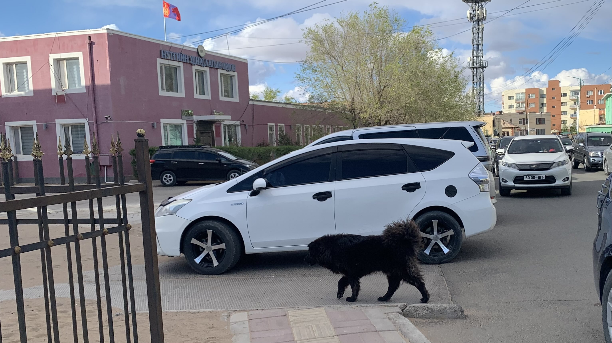
一出門就遇見傳說中的蒙古獒，看都沒看我一眼直接橫越馬路。據聞牧民養的蒙古獒可不會像這隻都市獒那麼淡定，腦中已經演練無數次被追著狂吠的景象。
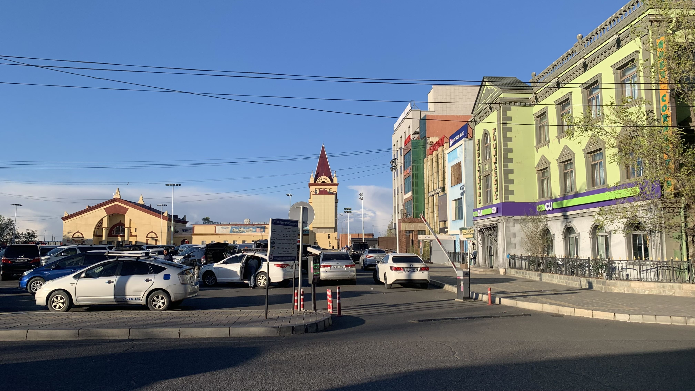
早上在這附近繞了兩小時找旅館，沒有太仔細欣賞，此時加上夕陽濾鏡更像歐洲了。
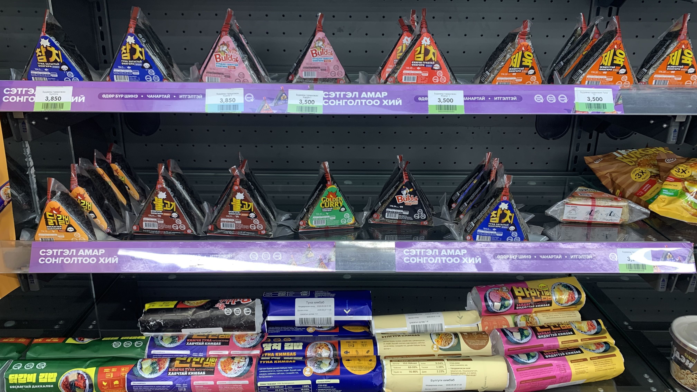
走進CU架上全都是韓國產品。
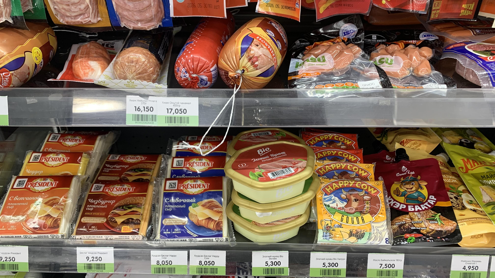
還有Président 的小包裝乳酪。
說真的，扎門烏德是不是把成吉思汗征戰過的國家文化全都濃縮在日常生活裡了？
結帳時店員少刷了一根蛋白棒的錢，一直試圖告訴他，但是他們以為我對價格有疑慮，重複指著發票上的優惠價格說這個才是你付的錢。期間陸續有人進來買熱狗，店員只好停下來做兩根熱狗，再回到櫃檯繼續指著發票說他已經有給我折扣。
就這樣來回大約10分鐘，進來兩位全身黑衣黑褲黑鞋，臉上刺青看起來很流氓型的年輕人，其中較高的一位經過我時回頭煞氣地掃射了一眼。
在他上完廁所回來結帳時我抓住時間差問他：「你會說英文嗎？」
煞氣青年立刻幫我詢問店員目前的狀況，用手機翻譯說：「你現在付的錢是76000元，已經有10000元的折扣了。」
看來店員還是沒搞懂意思呢，先謝過煞氣青年，他示意這沒什麼後轉身和朋友一起離開。
開始拿著每個商品逐一指著發票明細上的項目，最後確實少算了一根能量棒的錢，而買二送一的蛋白棒則少拿一支。隔壁支援收銀的店長和店員說了什麼，實在拖得太久，退回一根能量棒，拿了應得的商品就離開了。
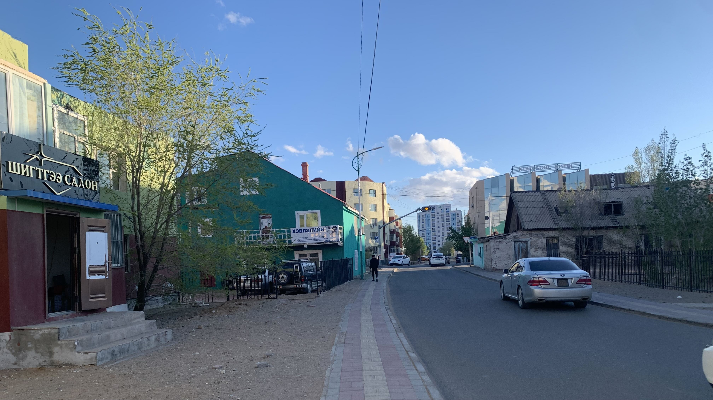
回程的路上一直有種莫名的熟悉感，我怎麼好像見過這場景？
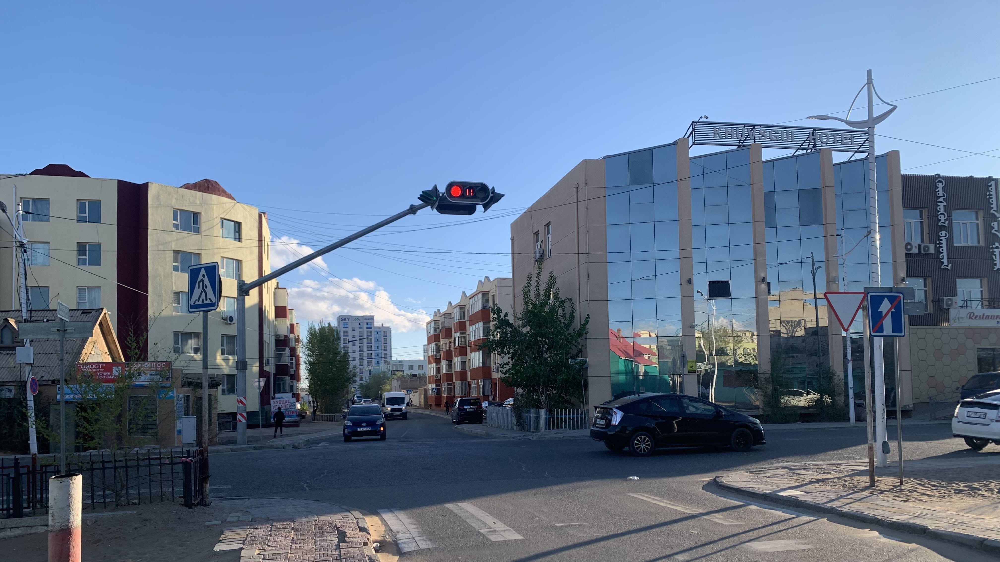
照片右邊的反光的玻璃建築就是今天的住處。
對蒙古的第一印象有點奇妙。大部分的人眼神都很煞氣，不只是眼神，肢體和動態氣場都是外擴的，空間超過了皮膚與世界的邊界。連路邊公車走下來的國中生靠近我時都嚼著口香糖用堅實的步伐和眼神傳遞：「看蝦餃？閃遠一點！」的訊息。刺青的人也很多，可見的當然是刺在脖子和手臂上，有些臉上也有。
語言聽起來跟韓文很像，今天坐車過境時聽著車上的夫妻和小孩聊天，好幾度以為自己聽懂了某些話，但其實根本不是那個意思。建築風格幾乎跟住在大巴黎Villejuif 時的街景無異（也可能是我的記憶模糊？），總之這裡融合了很多熟悉又異質的文化印記。其中較為陌生的大概是殺氣，入境第一天，先把它歸為蒙古特有的文化元素。
到一個國家完全聽不懂對方的語言實在失禮，希望可以盡快學會一些簡單的短句。
今日花費： 過境車費 53（人民幣）、食物飲料 233（台幣）、蛋白類產品 677（台幣）、晚餐 165（台幣）、住宿 98000元